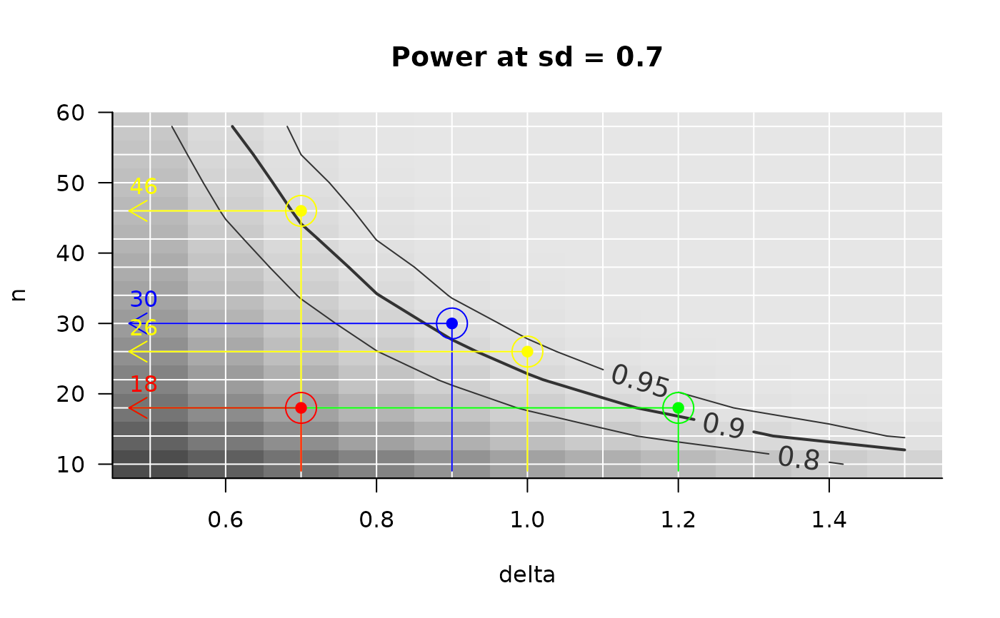
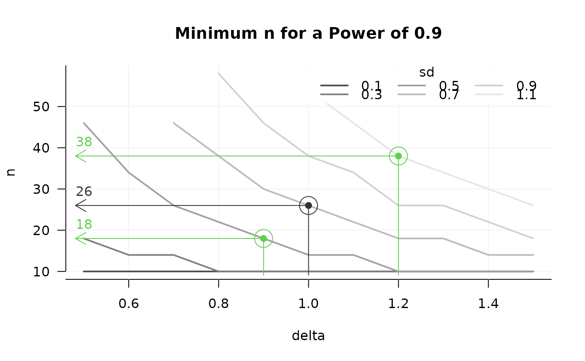

Add example arrow(s) to an existing figure created by PowerPlot or GridPlot.
AddExample is a higher level plotting function, so it does not know
anything about the figure it draws on top off. Therefore, take care your
figure makes sense, by supplying the same arguments x and
slicer that you supplied to the PowerPlot or
link{GridPlot} you are drawing on top off: With slicer you
define the plotted plain, with example the value on the x-axis where
the arrow starts. To be sure of a sensible result, use the argument
example inside Powerplot or GridPlot.
Usage
AddExample(
x,
slicer = NULL,
example = NULL,
find_lowest = TRUE,
target_value = NULL,
target_at_least = TRUE,
method = "step",
summary_function = mean,
col = grDevices::grey.colors(1, 0.2, 0.2),
example_text = TRUE,
...
)Arguments
- x, target_value, target_at_least, find_lowest, method, example_text, summary_function
See help for
PowerPlot.- slicer
A list, internally passed on to
ArraySlicerto cut out a (multidimensional) slice from x. You can achieve the same by appending "slicing" inside argumentexample. However, to assure that the result of AddExample is consistent with the figure it draws on top of (PowerPlot or GridPlot), copy the argumentsxandslicergiven to PowerPlot or GridPlot to AddTarget.- example
A list, defining at which value (list element value) of which parameter(s) (list element name(s)) the example is drawn for a power of
target_value. You may supply par vector(s) longer than 1 for multiple examples. Ifexamplecontains multiple parameters to define the example, all must contain a vector of the same length. Be aware that the first element ofexampledefines the parameter x-axis, so this function is not fool proof. See argumentslicerabove. If x has only one dimention, the example needs not be defined.- col
Color of arrow and text drawn.
- ...
Further arguments are passed to the two calls of function
graphics::arrowsdrawing the nicked arrow.
Details
arguments slicer and example
slicer takes the slice of x that is in the figure, example defines at
which value of which parameter, the example is drawn. These arguments' use
is the same as in PowerPlot and GridPlot. If you want to make sure that the
result of AddExample is consistent with a figure previously created using
PowerPlot or GridPlot, copy the argument slicer to such function to
AddExample, and define your example in example.
Note however, that:
slicer = list(a = c(1, 2)) and example = list(b = c(3, 4))
has the same result as:
example = list(b = c(3, 4) and a = c(1, 2)) (not defining slicer)
Importantly, the the order of example matters here, where the first
element defines the x-axis.
Examples
## For more examples, see ?PowerPlot
## Set up a grid of n, delta and sd:
sse_pars = list(
n = seq(from = 10, to = 60, by = 4),
delta = seq(from = 0.5, to = 1.5, by = 0.1), # effect size
sd = seq(.1, 1.1, .2)) # Standard deviation
## Define a power function using these parameters:
PowFun <- function(n, delta, sd){ # power for a t-test at alpha = .05
ptt = power.t.test(n = n/2, delta = delta, sd = sd,
sig.level = 0.05)
return(ptt$power)
}
## Evaluate PowFun across the grid defined by sse_pars:
power_array = PowerGrid(pars = sse_pars, fun = PowFun, n_iter = NA)
## ======================
## PowerPlot
## ======================
PowerPlot(power_array,
slicer = list(sd = .7),
)
AddExample(power_array,
slicer = list(sd = .7), # be sure to cut out the same plain as above
example = list(delta = .9),
target_value = .9,
col = 'blue')
AddExample(power_array,
slicer = list(sd = .7),
example = list(delta = c(.7, 1)), # multiple examples
target_value = .9,
col = 'yellow')
## Careful, you can move the slicer argument to example:
AddExample(power_array,
example = list(delta = 1.2, sd = .7), # delta (x-axis) first
target_value = .9,
col = 'green')
## Careful, because you can put the wrong value on x-axis!
AddExample(power_array,
example = list(sd = .7, delta = 1.2), # sd first?!
target_value = .9,
col = 'red')

## ======================
## GridPlot
## ======================
GridPlot(power_array, target_value = .9)
#> Warning: At some combinations of `x_par` and `l_par`, no `y_par` was found that yielded the required target value, which may result in lines ending abruptly. In most common use cases, you may want to increasing the range of n.
AddExample(power_array,
example = list(delta = 1, sd = .7),
target_value = .9
)
## two examples
AddExample(power_array,
example = list(delta = c(.9, 1.2), sd = c(.5, 1.1)),
target_value = .9, col = 3
)
